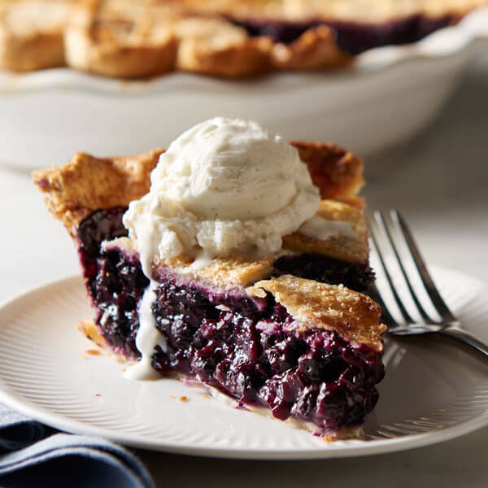

Blueberry Pie Recipe

Description
In the pantheon of summertime pies, blueberry pie is right up there at the top. A good one should be packed to the brim with plump roly-poly berries, the flaky and buttery crust barely able to contain the jewel-like bounty. It should need only a scoop of ice cream or a dollop of whipped cream to finish it off. Here is our recipe for a classic blueberry pie — no frills, no secret ingredients, just blueberries in all their summery glory.
Ingredients
Crust
- 2 Cups All-Purpose Flour
- 1/4 Teaspoon Salt
- 2/3 Cup Cold Land O Lakes Butter
- 4-5 Tablespoons Cold Water
Filling
- 3/4 Cup Sugar
- 1/2 cup All-Purpose Flours
- 1 Teaspoon Freshly Grated Lemon Zest
- 1/4 Teaspoon Ground Nutmeg
- 1/2 Teaspoon Ground Cinnamon
- 5 Cubs Thawed Frozen Blueberries
Steps
- Heat oven to 400 degrees fahrenheit
- Combine 2 cups flour and salt in bowl; cut in butter with pastry blender or fork until mixture resembles coarse crumbs. Stir in enough water with fork just until flour is moistened
- Divide dough in half. Shape each half into ball; flatten slightly. Wrap 1 dough ball in plastic food wrap; refrigerate. Roll out remaining dough ball on lightly floured surface into 12-inch circle. Fold into quarters. Place dough into ungreased 8-inch pie pan; unfold, pressing firmly against bottom and sides. Trim crust to 1/2 inch from edge of pan.
- Combine sugar, 1/2 cup flour, lemon zest, cinnamon and nutmeg in bowl; mix well. Gently stir in blueberries. Spoon blueberry mixture into prepared pie crust.
- Roll out refrigerated dough ball on lightly floured surface into 12-inch circle. Place dough over filling. Seal, trim and crimp or flute edge. Cut 8-10 slits in crust. Cover edge of crust with 2-inch strip of aluminum foil.
- Bake 35 minutes; remove foil. Continue baking 10-20 minutes or until crust is lightly browned and juice begins to bubble through slits in crust.
- Cool pie at least 1 hour; serve warm. Store refrigerated